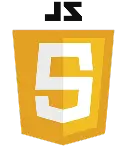
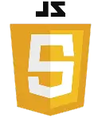

PROJEKT NO. 4
Sandika Circle
Case
Vi fik til opgave at indgå i et samarbejde med en virksomhed og udarbejde en
digital løsning for dem. Min gruppe og jeg indgik et samarbejde med Laura Sandika, som er ejer af
Sandika Circle - et yogalates brand i sin opstartsfase. Da studiet var nyt, var det uden visuelt
identitet eller digital tilstedeværelse, hvilket blev vores problemstilling og dermed hovedfokus.
Værktøjer


 

Løsning var en mobiloptimeret hjemmeside, med fokus på stærke genkendelige visuelle elementer og animationer.